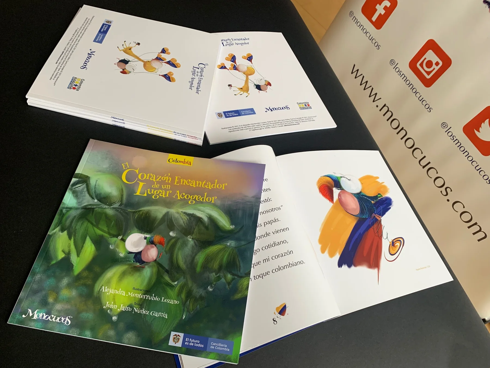

Diplomacia cultural
Historias que ayudan a acercar a los niños a Colombia, su identidad, su diversidad y sus vínculos con otros países.
Una historia que sale del libro para encontrarse con los niños, las comunidades y los territorios.
MONOCUCOS crea puentes entre identidad, cultura, educación y comunidad, llevando su universo a diferentes lugares de Colombia y del mundo.
Esta dimensión de MONOCUCOS conecta a los niños con sus raíces, su cultura y otras formas de mirar el mundo. Las historias se convierten en una herramienta para crear vínculos y abrir conversaciones.
MONOCUCOS puede acompañar iniciativas culturales, educativas y sociales en los territorios, adaptando sus personajes e historias a diferentes comunidades y contextos.
Historias que ayudan a acercar a los niños a Colombia, su identidad, su diversidad y sus vínculos con otros países.
Espacios donde MONOCUCOS puede convertirse en un puente cultural para niños y familias.
Experiencias que acercan las historias de Colombia a comunidades colombianas en el exterior.
Una dimensión que conecta educación, cultura, infancia e identidad colombiana.
Una experiencia que llevó la mirada de los niños hacia Colombia, su cultura, sus recuerdos y su identidad, dentro de una dimensión internacional de MONOCUCOS.

MONOCUCOS en los Territorios busca llevar imaginación, identidad y valores a nuevos escenarios, creando conexiones que puedan crecer más allá de una historia.